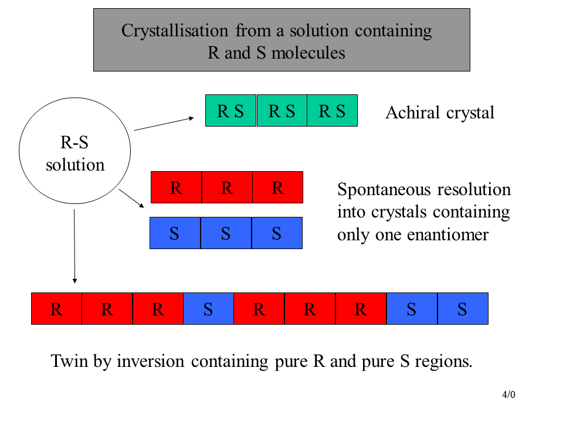

Crystallisation from a solution containing R and S molecules
Case 1.
The molecules associate in pairs across a symmetry operator of the second kind e.g. a centre of inversion, mirror.
The space group will be achiral and can be either centrosymmetric (e.g. P21/c) or non-centrosymmetric (e.g. Pc).
The crystal will contain equal numbers of the R and S molecules
A solution made from an achiral crystal will not rotate polarised light.
Case 2.
The molecules segregate themselves, with each crystal containing exclusively R or S molecules. This is called spontaneous resolution, and the resulting mixture of crystals is called a conglomerate. Both hands of crystals in Pasteur’s resolved tartrate were in space group P21 21 2
The space group will be chiral non-centrosymmetric,
e.g. P21 21 21. The space group of a crystal containing only R molecules will almost always be the same as that containing only S molecules.
The specific rotation of a solution made from a crystal containing R molecules will be equal and opposite to that made from a crystal containing S molecules
Case 3.
The crystals contain regions consisting exclusively of R molecules, and regions consisting exclusively of S molecules. These regions will have an exact crystallographic relationship with each other, but need not necessarily be of the same volume. The crystal is said to be twinned by inversion, often called racemic twinning.
The space group will be chiral non-centrosymmetric,
e.g. P21 21 21.
The specific rotation of a solution made from a single crystal will be less than that from an un-twinned crystal.
